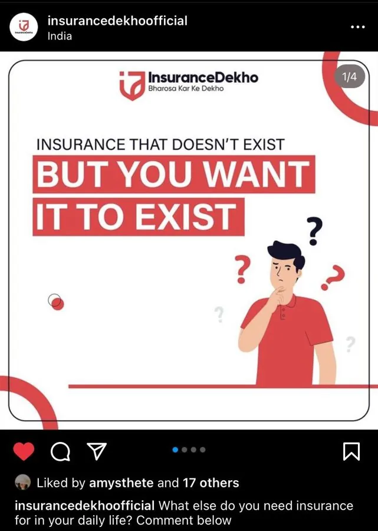
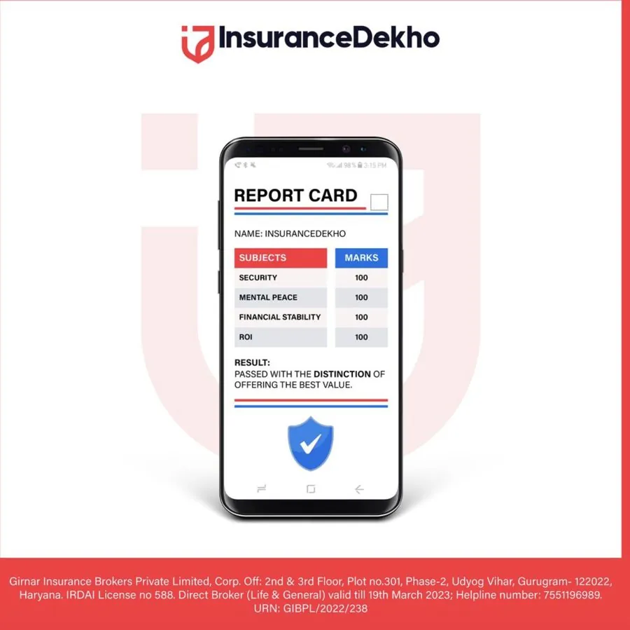
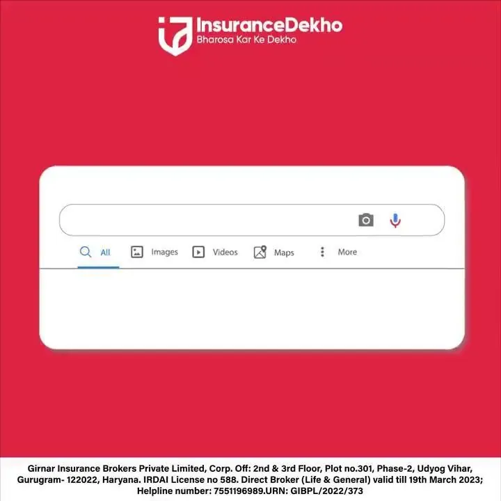

Ep. 01 · Insurance
InsuranceDekho — #BharosaKarKeDekho
- SetupInsurance is the product nobody wants to think about. The brand's feed was skippable and its features read like a policy document.
- ChaseWorked within a hub-and-spoke system: one campaign spine — Bharosa kar ke dekho, "trust, but see for yourself" — with topical, USP and moment-marketing spokes. Wrote in the voice of an everyday Indian's inner monologue, not an insurer's.
- PayoffA feed that talks like a person: reminders hidden in mirrors, a Tetris explainer for plan features, a brand that introduces itself by name.
- “Zoom into the mirror to see a reminder.”
- “Insurance that doesn't exist — but you want it to.”
- “My name is Insurance. But people call me…”
Reach and engagement lift: confirm with client



